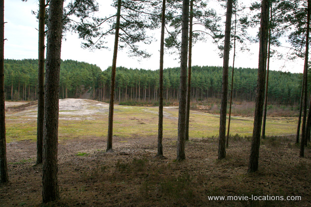

Gladiator
Main Content

Discover where Ridley Scott’s Oscar-winning blockbuster Gladiator was filmed in Morocco, North Africa, on the island of Malta in the Mediterranean, and even in the woodland of Surrey.
Ridley Scott’s Oscar-winning epic film borrows heavily from Anthony Mann’s 1964 Fall of the Roman Empire (made on vast sets in Spain, and which had Alec Guinness in the Richard Harris role of Marcus Aurelius, and Christopher Plummer as the barking mad emperor Commodus) and Stanley Kubrick‘s Spartacus (which was, itself, begun by Anthony Mann).
The savage opening battle, set in ‘Germania’, was staged at Bourne Wood near Farnham, Surrey. The story that filming caused ructions among environmentalists after swathes of forest were cleared seems to be a media concoction – this was an area scheduled for clearing by the Forestry Commission. The clearing, south of Dene Lane, off Tilford Road, southeast of Farnham, was revisited in 2009 by Ridley Scott and Russell Crowe for the castle and village sets in Robin Hood. More recently, the forest became the muddy battlefield of WWI for Steven Spielberg’s War Horse and saw Marvel’s hammer-wielding superhero battling inhuman hordes in Thor: The Dark World, Diana Prince and her team riding through the forest to find the 'German High Command' in Patty Jenkins's Wonder Woman and King Magnus facing a phantom army in Snow White and the Huntsman.
The African town, where Maximus (Crowe) is sold into slavery, is Aït Ben Haddou, near Ouarzazate in Morocco. Director Ridley Scott returned to the same locale to film 'Jerusalem' scenes for Kingdom of Heaven and again for Gladiator II.
Aït Ben Haddou is a ksar (fortified village) on the former caravan route between the Sahara and Marrakech in the foothills of the High Atlas Mountains. It's a great example of southern Moroccan earthen clay architecture and in 1987 was designated a UNESCO World Heritage Site.
The provincial arena was added to the existing village, which had already hosted films such as David Lean’s Lawrence of Arabia, The Last Days of Sodom and Gomorrah (co-directed by Sergio Leone and Robert Aldrich) and Jewel of the Nile.
The vast ‘Roman’ sets (with extensive CGI additions) were constructed on the massive remains of Fort Ricasoli on Malta, later used for the filming of Wolfgang Petersen’s 2004 epic Troy as well as Scott's own Napoleon and Gladiator II.
Visit Info
Visit The Film Locations
Morocco
Visit: Morocco
Visit: Marrakech
Flights: Marrakech Menara Airport, Ménara, Marrakech 40000 (tel: +212.5244.47910)
Visit: Ouarzazate
Visit: Atlas Studios, Km 5, BP 28 Route de Marrakech, BP 28 Route de Marrakech, Ouarzazate 45000 (tel: 212.5248.82212)
Visit: the Ksar of Ait-Ben-Haddou
Malta
Visit: Malta
Flights: Malta International Airport, Luqa LQA 4000, Malta (tel: 356.2124.9600)
Surrey
Visit: Surrey
Visit: Bourne Wood (rail: Farnham, from London Waterloo)